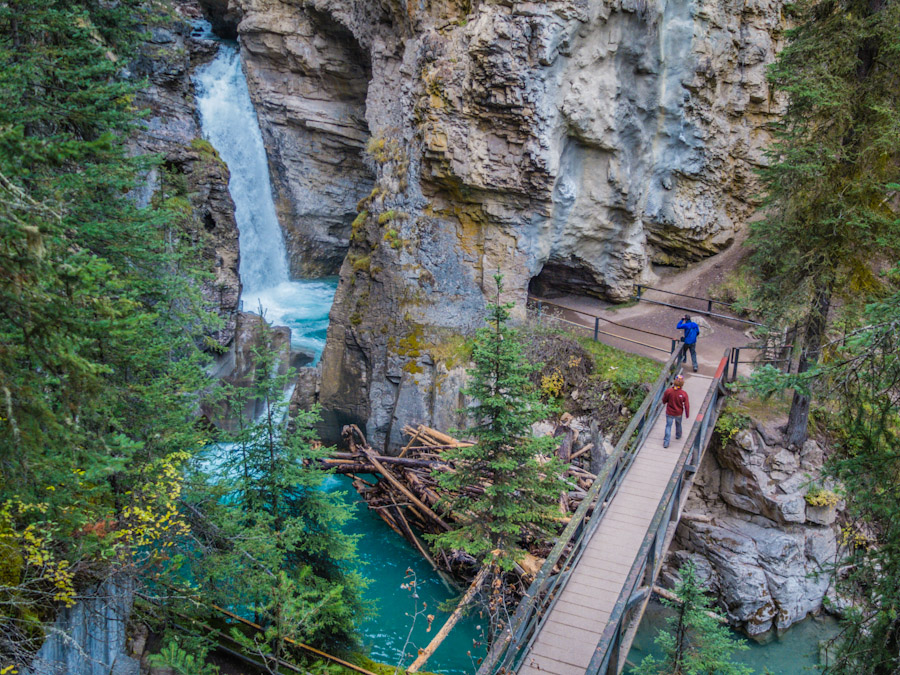
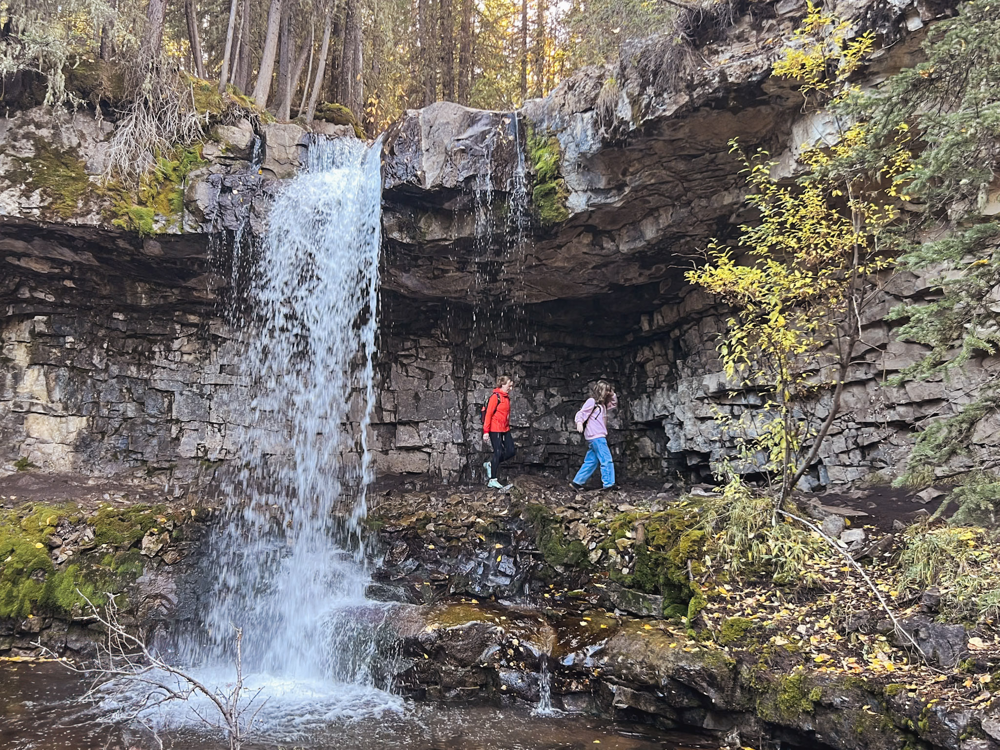

Plain of Six Glaciers
An iconic Lake Louise trail that takes you deep into an alpine valley framed by giant glaciers, ending near a historic backcountry tea house.
Weather near Lake Louise
Loading weather information...
A curated routes for every skill level—from casual weekend walks to challenging alpine ascents.
An iconic Lake Louise trail that takes you deep into an alpine valley framed by giant glaciers, ending near a historic backcountry tea house.
Loading weather information...

A classic Banff hike following a dramatic limestone canyon with waterfalls before opening up into a serene meadow with bubbling mineral springs.
Loading weather information...

A steep and steady climb above Canmore that rewards hikers with panoramic 360-degree views of the Bow Valley and Mount Rundle.
Loading weather information...

An easy, family-friendly walk through pine forests leading to a picturesque waterfall tucked in the Kananaskis Valley
Loading weather information...
Discover the Lake Louise area on an interactive map.
This map is provided by OpenStreetMap. Loading it may share your IP address and browser information with a third party.
Map not displaying? Open the map on OpenStreetMap.
Ask us about beginner-friendly trails in Alberta.
Yes! Our goal is to make trail information accessible to everyone. All route details, maps, and safety guides on Alberta Trail Guide are 100% free to access.